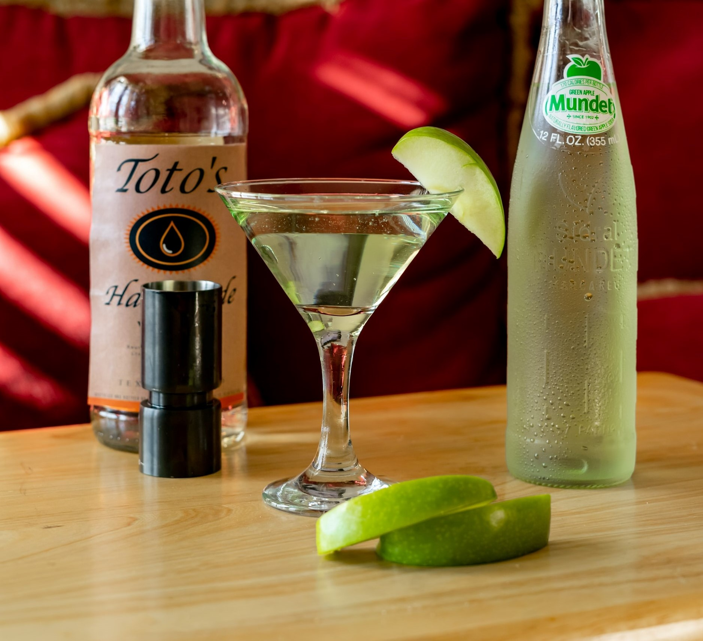

Appletini
애플 마르티니
#초보자 #힙합 #새콤한 #약한 탄산 #적당한 도수

Ingredients
- 보드카 30ml
- 애플 리큐어 30ml
- 레몬 주스 15ml
- 설탕 시럽 10ml
- 얼음 100g
Recipe
- 쉐이커에 얼음을 채워줍니다.
- 보드카 30ml, 애플 리큐어 30ml, 레몬 주스 15ml, 설탕 시럽 10ml를 넣습니다.
- 쉐이커를 잘 흔들어 재료를 섞어줍니다.
- 혼합물을 스트레이너를 사용해 칵테일 잔에 따릅니다.
TIP! 사과 조각으로 맛있는 장식을 취하는 건 어떨까요?
History
보드카 마티니에서 베르무트 대신 사과 주스나 애플 슈냅스를 사용한 칵테일입니다. 1996년 롤라의 웨스트 할리우드 레스토랑(Lola's West Hollywood Restaurant)의 바텐더 아담 카스턴(Adam Karston)에 의해 개발되었다. 처음에는 그의 이름을 따 Adam's Apple이라는 이름으로 불렸으나, 그의 이름을 빼고 애플 마티니, 줄여서 애플티니라는 이름으로 정착되었습니다.
어떤 레시피를 사용해도 25도가 넘는 독한 칵테일이지만, 특유의 예쁜 초록색과 새콤달콤한 맛으로 인기가 많습니다. 애플티니를 처음 시도한 롤라의 레스토랑에서는 술취해 쓰러진 여성들이 너무 많아져서 메뉴에서 제외한 적도 있을 정도라 판매 중지가 6개월 정도 이어졌는데, 애플티니를 원하는 사람들의 원성이 너무 많아서 다시 판매하기 시작했다고 합니다.
보드카티니가 원래의 마티니에서 진을 보드카로 대체한 것인데, 여기서 베르무트마저 애플 슈냅스로 대체하며 마티니와 완전히 멀어진 칵테일이 되었으나, 여전히 마티니라는 이름을 사용합니다. 이러한 경향은 1990년대부터 시작되었는데, 이때 이후로 개발된 많은 칵테일들은 마티니 글라스에 담으면 일단 마티니라고 부르고, 때로는 마티니 글라스에 담지 않았음에도 마티니라고 부르는 것들이 생겼습니다.